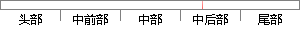

θ) 〗 似然函数 （4-5）
片段位置图

相似结果|
相似片段 1：）地基承载力隶属函数由于承载能力属于正向指标，即该值越大越好，因此，直接将? ? ? ?90.0,95.0,0.1,,???? 代入公式（4-5）、（4-6）、（4-7）、（4-8），可得到
相似片段 2： Re=23.74 时惯性湍流中三个速度分量的空间自相关以及与压力互相关函数。从图 4-5(a)中可以看出，由于计算中三个方向均采用周期性边界，各分量的空间自相关函数均关于两点距离? ?? 对称，其中
相似片段 3：(1 M )( d dM ε )中的 Taylor 因子可以利用取向分布函数计算得到，取向分布函数的表达式如方程 4-5，方程中的 θ，ψ，φ 是欧拉角，Zlmn 是勒让德函数，它的定义式是方程
相似片段 4：表 4-5列出了需要自己利用 Nucleus已有函数实现功能的 SQLite3 操作系统层函数。表 4-5 通过 Nucleus 系统函数实现 SQLite3 操作系统层函数Table 4-5
相似片段 5：此处采用的经典测试函数如下：（i） 2r yUt U函数首先选择最为常见的 Sphere 函数作为评价函数，其函数形式如式(4-22)，函数的空间特征如图 4-5 a)。II 332
相似片段 6：()returnRestore_to_default()Reset()Timer_update()Para=0x00图 4-5 恢复出厂设置功能处理流程图 4-5 中，在 ODM 层初始化函数中设计恢复出厂设置状态位检测函数
相似片段 7：=5X02-0.6Y=2.5X+L50-0.2Y=5X+l(K,2) (%) ( xI02Kg)>4 5 >4— 函数 —3.5--4 4-5 3.5--4Y=2X-3 A数 Y-2X-:43-3.5
相似片段 8：。阈值函数表达式为：? ? xf x x? ???? ?? ??(4-5)式中， ? 、 ? 、? 均为非负数，? 称为阈值，函数图像如图 4-5所示：? S形函数S形函数又称为压缩函数和逻辑斯特函数
相似片段 9：= = ? ? < <(4-6)图 4-4 对数 Sigmoid函数 图 4-5 Tan-Sigmoid函数Fig. 4-4 Log-Sigmoid function Fig. 4-5 Tan-Sigmoid
|
※ 片段修改建议 ※
近似词参考：